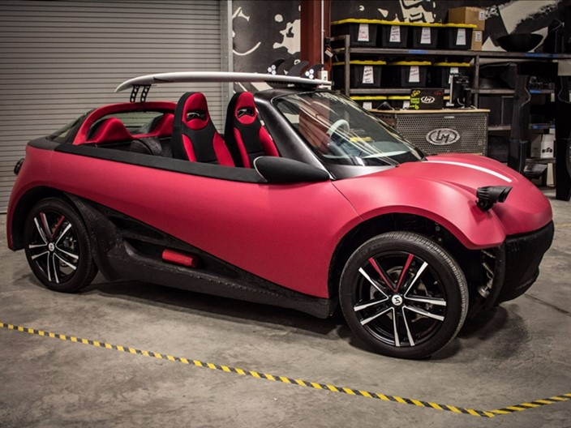
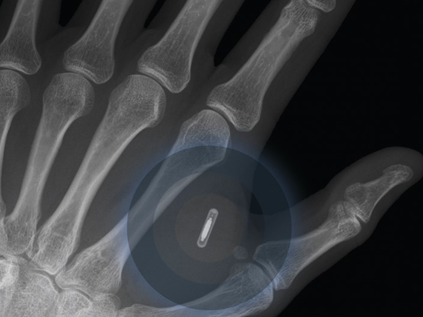
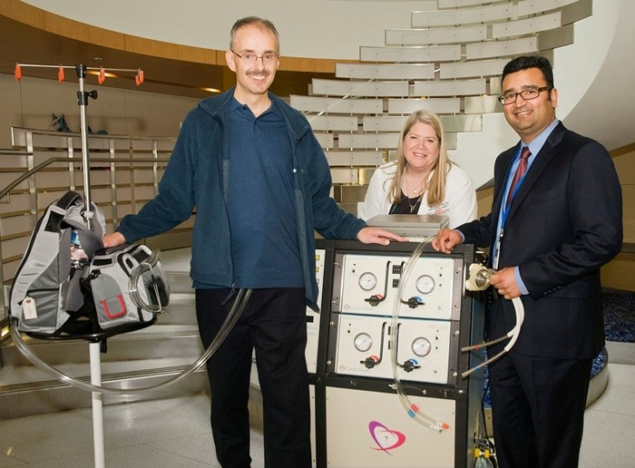

A energia solar já existe há tempos, porém não é algo tão popular. Felizmente, o custo
médio dos painéis solares tem diminuído bastante com o passar dos anos. Por exemplo, nos
Estados Unidos um painel por watt custava aproximadamente US$ 75 em 1972, valor que hoje
é de somente alguns dólares.
De acordo com pesquisas da Agência Internacional de Energia (IEA), é esperado que até 2050
os painéis solares sejam capazes de gerar 27% da energia total do mundo, tornando-se assim
a nossa principal fonte de energia no planeta (fonte de eletricidade que também é considerada
bastante limpa). Se isso se concre tizar, aproximadamente 6 bilhões de toneladas de dióxido
de carbono poderiam ser evitadas todos os anos.
2 – Um trilhão de sensores conectados à internet
Já falamos muito sobre a internet das coisas aqui no TecMundo. Para ela se tornar realidade,
é necessário que a internet esteja muito mais presente em nossas vidas do que hoje. Como o
custo dos sensores tem diminuído e a demanda por eles tem aumentado, é cogitado que até 2025
mais de 1 trilhão de sensores se conectem à internet.
A Internet das Coisas oferece um grande potencial para modificar as nossas vidas e só o tempo
dirá se essas projeções realmente se confirmarão. Inclusive, especialistas preveem que 10% da
população mundial estará vestindo roupas com chips embutidos que se conectam à internet até 2022.
Hoje já temos um bom leque de dispositivos vestíveis no mercado, incluindo relógios inteligentes,
pulseiras e óculos que se conectam à web.

3 – O primeiro carro feito em impressão 3D entrará em produção
A demanda de impressoras 3D tem crescido muito desde o lançamento das primeiras versões desses
aparelhos. Por exemplo, em 2014, mais de 130 mil impressoras 3D foram vendidas em todo o mundo,
um aumento de quase 70% em relação aos números de 2013 (quantia que deve subir ainda mais em 2015).
Conforme as impressoras 3D ficam mais poderosas e baratas, novas aplicações surgem para esses equipam
entos. Algumas empresas jáestão utilizando a tecnologia para criar protótipos de automóveis, imprimindo
peças específicas de veículos. A Audi exibiu recentemente um carro de tamanho diminuto criado pelas suas
impressoras 3D de metal. A empresa Local Motors já disse que vai fabricar um automóvel completo e em tama
nho real somente através de impressão 3D nos próximos anos – inclusive, vários protótipos já foram criados.

4 – Os celulares implantáveis serão realidade.
Estar constantemente conectado pode adquirir um significado completamente diferente em 2025. De acordo
com especialistas, é provável que nos próximos dez anos o primeiro celular implantável esteja comercial
mente disponível em grande escala. O aparelho (que consistirá basicamente em um chip mais robusto) será
capaz de monitorar vários dados do indivíduo, permitindo que o usuário se comunique através de ondas
cerebrais ou sinais verbais.
Já existem alguns dispositivos implantáveis atualmente, como os marca-passos, porém o chip em questão
trará muitas outras possibilidades, já que poderá se conectar à internet. Resta-nos saber se as pessoas
realmente adotarão tal aparelho, principalmente por esse ser um material não natural que emite ondas ele
tromagnéticas.

5 – Órgãos artificiais poderiam acabar com as filas de transplantes.
De acordo com as estatísticas dos Estados Unidos, um entre 18 indivíduos morre no país esperando na fila por
um transplante de órgão – realidade que também ocorre em outras proporções em vários países. Já existem tecno
logias para ampliar a vida desses pacientes, porém nada substitui um órgão de fato.
Em aproximadamente 35 anos, é cogitado que os laboratórios criarão soluções mais permanentes para as pessoas que
aguardam ansiosamente nesses filas. Não será necessário esperar alguém morrer para você receber um órgão novo, pois
eles serão fabricados nos próprios laboratórios. Já existem casos de bexigas totalmente artificiais que foram transp
lantadas em pacientes, e hoje eles estão bem e sem efeitos colaterais.
Outros órgãos, como corações, já estão a caminho. O mais impressionante é que a tecnologia das impressoras 3D também
pode entrar nesse procedimento, pois os cientistas poderão utilizar as células-tronco de um paciente para criar um
órgão preciso e específico para ele. Esse processo envolve o crescimento de células-tronco no laboratório após removê-las.